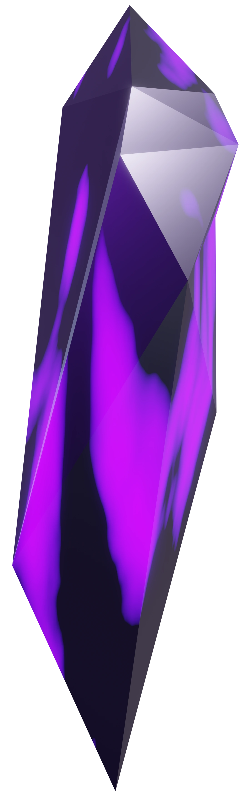
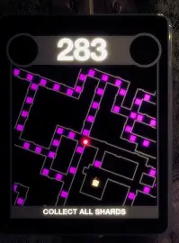
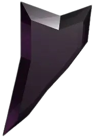
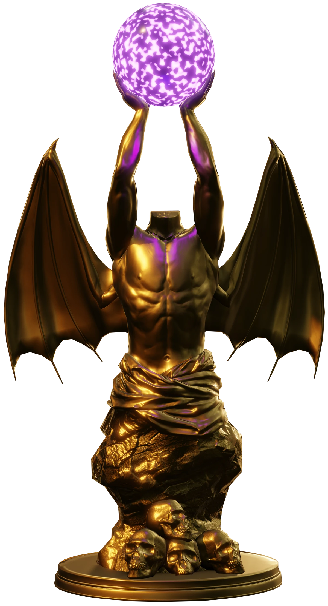
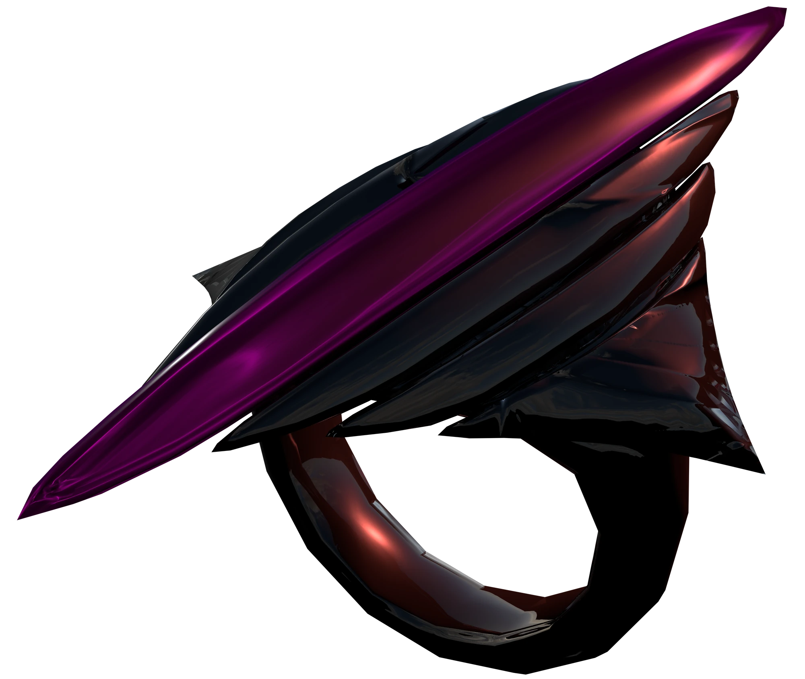
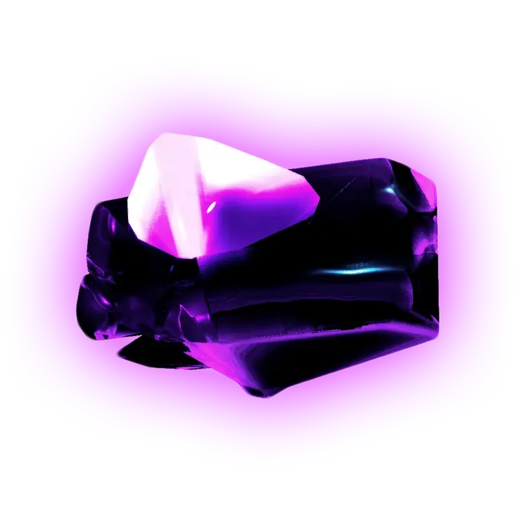

Objetivo
Todos os itens apresentados nesta página estão físicamente ou são relacionados a todas as fases do jogo, esta página procura explicar os seus papéis.
Fragmentos de Almas (soul shards)

Os Fragmentos ou cristais, são itens espalhados em grande quantidade pela fase inteira, sendo o necessário a coleta de todos para liberar o pedaço de anel (Item unico em cada fase e também ultimo item obrigatório a se coletar e liberar a saída da fase) e fugir da fase, os fragmentos são a alma dos que passaram pelas fases e não sobreviveram

Fragmentos no mini-mapa

Design alternativo dos Fragmentos
Estátua Do Anel

A estátua do anel aparece em todas as fases e proteje o pedaço do anel que a fase possui, quanto todos os fragmentos da fase são coletados a barreira roxa se desfaz e o pedaço de anel é exposto, para que o player possa pegar e fugir da fase com ele.
O Anel

Apesar de não estar inteiramente em todas as fases, um pedaço seu está em todas as fases, e é o objetivo principal, o anel possui um enorme poder e é o único item explorado no jogo capaz de enfrentar O Malak (vilão principal).
Pedaços Do Anel
